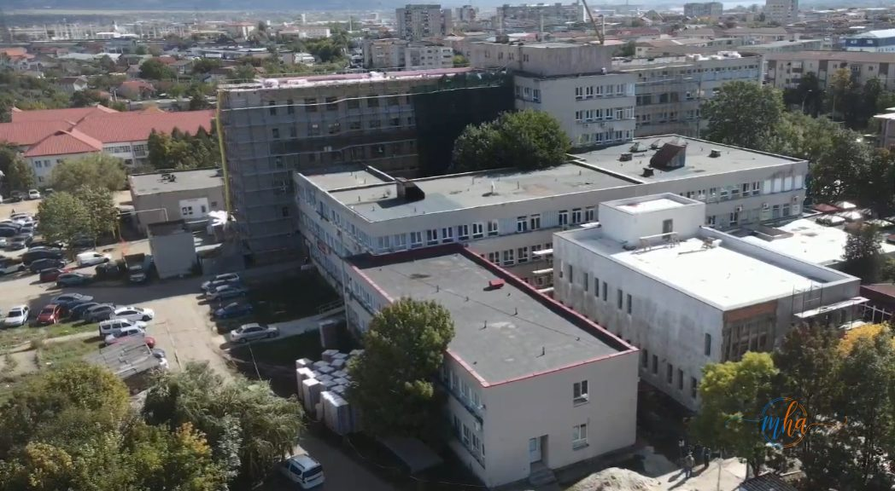
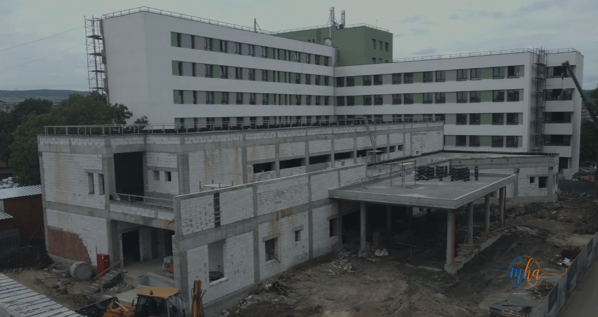
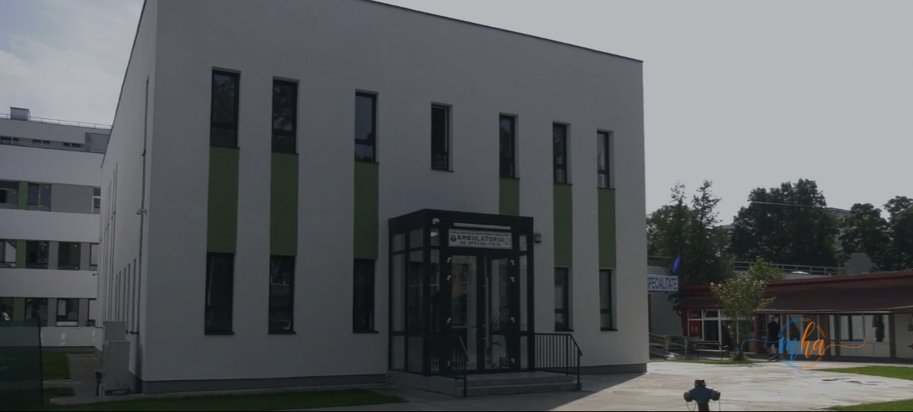
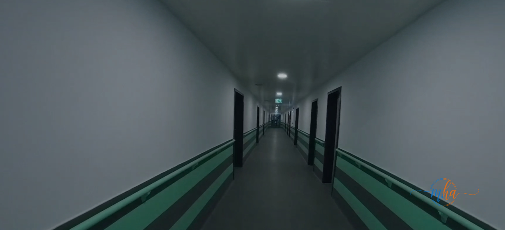
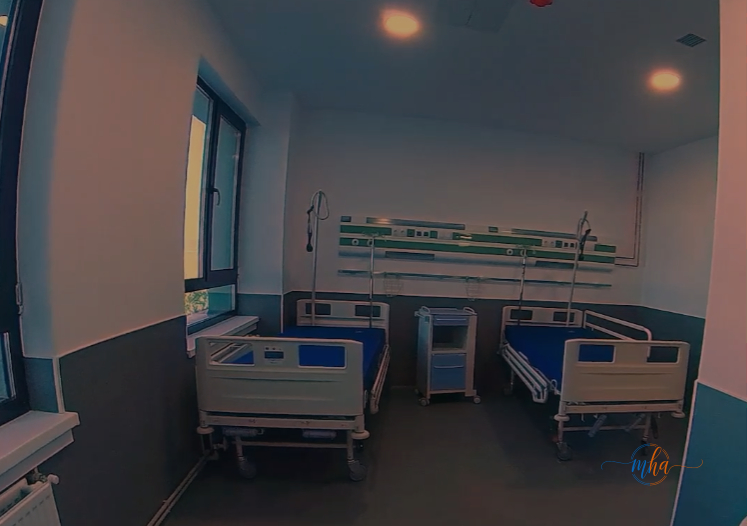

Un important proiect de modernizare a infrastructurii medicale din Drobeta-Turnu Severin se apropie de finalizare, după o investiție amplă realizată din fonduri europene și buget local. Lucrările au vizat extinderea, reabilitarea și dotarea cu echipamente moderne a unor secții medicale, în scopul creșterii calității serviciilor oferite pacienților din județul Mehedinți.
Proiectul marchează una dintre cele mai importante investiții realizate în ultimii ani în sistemul sanitar local, demonstrând că accesul la servicii medicale de calitate poate fi asigurat și în județele din sudul României, nu doar în marile centre universitare.
🏥 Date proiect — Modernizare Spital Drobeta-Turnu Severin
| Unitate medicală | Spital Drobeta-Turnu Severin |
| Județ | Mehedinți |
| Tip investiție | Extindere, reabilitare, dotare |
| Finanțare | Fonduri europene + buget local |
| Beneficiari | Pacienții din județul Mehedinți |
| Stadiu | În curs de finalizare |
Lucrări complexe pentru o infrastructură medicală modernă
Proiectul a presupus modernizarea spațiilor medicale, amenajarea saloanelor și a blocurilor operatorii, precum și achiziționarea de aparatură performantă pentru diagnostic și tratament. Investiția contribuie la îmbunătățirea condițiilor pentru pacienți și cadrele medicale și reprezintă un pas important pentru dezvoltarea sistemului sanitar din județ.

Spitalul înainte de modernizare — stadiul inițial al lucrărilor | Foto: MehedintiAzi.ro

Extinderea spitalului — lucrări de construcție a noii aripi | Foto: MehedintiAzi.ro

Ambulatoriul de specialitate — clădire modernă, finalizată prin proiect | Foto: MehedintiAzi.ro
Dotări la standarde europene
Noile dotări includ echipamente medicale de ultimă generație, spații complet renovate și saloane adaptate cerințelor actuale din domeniul sănătății, toate având ca obiectiv principal creșterea siguranței și confortului pacienților.

Coridoarele spitalului — complet renovate, la standarde europene | Foto: MehedintiAzi.ro

Saloane echipate cu paturi și dotări medicale moderne | Foto: MehedintiAzi.ro
✅ Ce aduce proiectul de modernizare
- 🏗️ Extinderea și reabilitarea clădirii spitalului
- 🛏️ Saloane modernizate adaptate standardelor actuale
- 🔬 Blocuri operatorii complet renovate și dotate
- ⚙️ Aparatură de diagnostic și tratament de ultimă generație
- 💡 Instalații moderne — electrice, termice, sanitare
- 🇪🇺 Standarde europene în condiții și dotări medicale
Efortul de atragere a fondurilor europene — recunoscut
În cadrul prezentării proiectului au fost evidențiate eforturile depuse pentru atragerea fondurilor necesare și pentru implementarea lucrărilor într-un ritm susținut, astfel încât unitatea medicală să beneficieze de condiții moderne și de tehnologii la standarde europene.
„Investițiile în sănătate rămân o prioritate, iar astfel de proiecte sunt esențiale pentru dezvoltarea serviciilor medicale și pentru asigurarea unor condiții cât mai bune pentru locuitorii județului." — Reprezentanții administrației
O investiție istorică pentru sănătatea mehedinșenilor
Modernizarea infrastructurii medicale din Drobeta-Turnu Severin reprezintă una dintre cele mai importante investiții realizate în ultimii ani în sistemul sanitar local. Prin atragerea fondurilor europene și cofinanțarea din bugetul local, județul Mehedinți demonstrează că poate accesa resurse semnificative pentru îmbunătățirea calității vieții cetățenilor.
Finalizarea proiectului va aduce beneficii directe tuturor pacienților din județul Mehedinți și din județele limitrofe care apelează la serviciile spitalului din Drobeta-Turnu Severin, asigurând un nivel de îngrijire medicală la standarde europene.